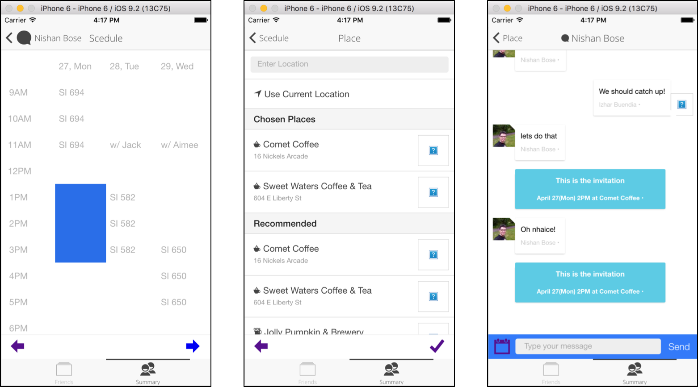

I took SI 694 - Advanced Social Computing Design Projects course, and conducted a project to develop a mobile application as a part of course objectives. The main purpose of the project was applying the concept of social computing to the application. For this, we've come up with an application which can help people to catch up with their friends easily. My main role was a full-stack developer - I was responsible for building the framework for the application and implementing several features to the application. I also participated in whole processes of ideation, sketches, and validation.
First of all, we decided to use Ionic with AngularJS as a main framework for this application, since it saves a lot of times in developing a mobile application. I built basic frameworks(creating an Ionic application and ilnk it to AngularJS) in this part.
In regards to the application itself, we designed the application to connect with each user's Facebook account, since Facebook is one of the most widely used Social Network Services all over the world, and using its account makes the application easier to grab the list of user's friends. I implemented Facebook intergration
One main feature of the application is chatting. The application lets users to select their friends to catch up, then it triggers the chatting interface. I implemented the real-time chatting interface, and my teammate made connections between the chatting records and the database for storing and retrieving relevant data.

The calendar icon placed at the bottom of the chatting interface triggers scheduling feature. Users can find out their free times through calendar app integration, select several time slots they want to meet their friends, suggest places to meet, and send. I implemented whole features in this part.